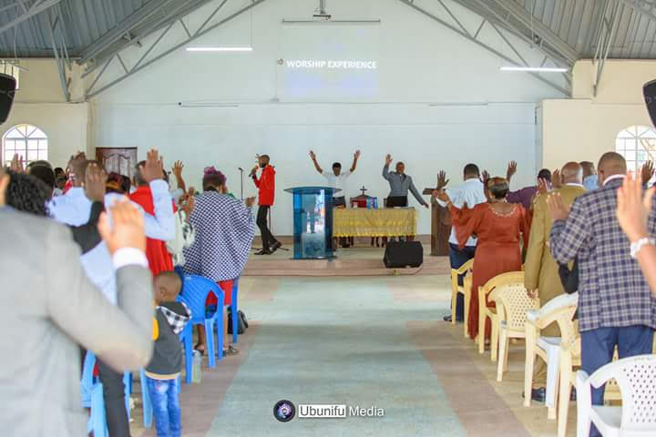
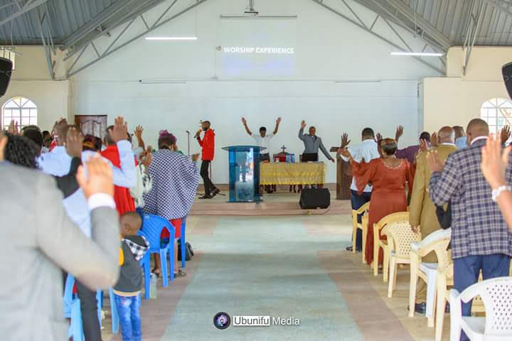

Our Doctrines
These are the Methodist Church Doctrines:
1. We claim and cherish our place in the Holy Catholic Church which is the Body of Christ.
2. The doctrines of the Evangelical faith which Methodism has held from the beginning and still holds are based upon the divine revelation recorded in the Holy Scriptures. The Methodist Church acknowledges this revelation as the supreme rule of faith and practice. These Evangelical doctrines,to which the preacher of the Methodist church,ministerial and lay , are pledged , are contained in WESLEY’s Notes on the new testament and his Forty four sermons.
3. The notes on the New Testament and the Forty Four Sermons are not intended to impose a system of formal or speculative theology on Methodist preachers, but to set up standards of preaching and belief which should secure loyalty to the fundamental truths of the gospel of redemption and to ensure the continued witness of the church to the realities of the christian experience of salvation.
 

4. Conference is the final authority within the curch with regard to its doctrines and all questions concerning the interpretation of the doctrine.
5. Christ’s ministers in the church are stewards in the household of God, and shepherds of his flock. Some are called and ordained to this sole occupation , and have a principal and directing part in these great duties.
6. It is the universal conviction of the Methodist people that the office of the christian ministry depends upon the call of God bestows the gifts of the Spirit, the Grace and the fruit of which indicate those whom God has chosen.
7.Those whom the church recognizes as called of God,and therefore receives into its ministry, shall be ordained by the imposition of hands with prayer to the Holy Spirit for authority for the office and work of a minister in the curch of Christ, thus expressing the church's recognition of the minister’s personal call.